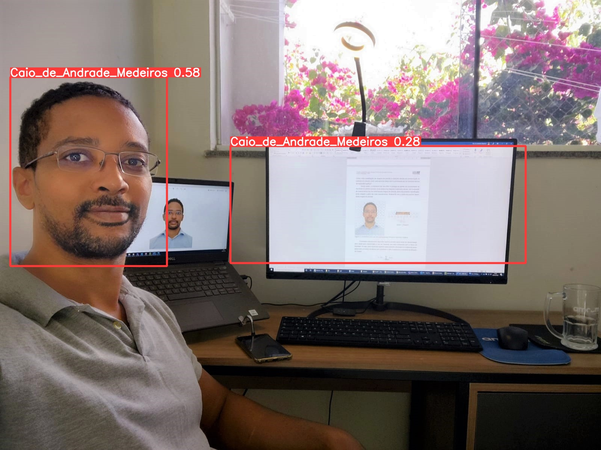
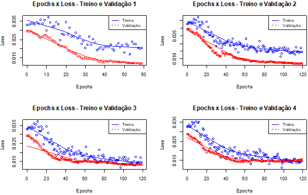

Caio de Andrade Medeiros
caioamedeiros@gmail.com
Desenvolvimento de robôs utilizando ferramenta da RPA (Automation Anywhere 360), linguagens VBA, VBScript e Python, para automação de processos no SAP, Excel, Power Point e Power BI. Desenvolvimento de Dashboard em Power BI para auxiliar a sustentação dos robôs com o monitoramento do desempenho das automações através de Logs.
- Automação de tarefas em Excel e criação de Macros utilizando linguagem VBA e ferramenta de RPA. Desenvolvimento de aplicativos para MSOffice utilizando linguagem VBA. Desenvolvimento de aplicativos para Smartphone utilizando PowerApps, para coleta de dados, Leitura de QR Code/Código de Barra de Notas Fiscais, controle de frota de veículos, preenchimento de formulários. Atualização e criação de Painéis de indicadores no Power BI OnLine e Desktop utilizando conexões SQL Server, Queries do TOTVS Protheus, Sharepoint, Agrimanager. Processo de ETL utilizando Power Query com linguagem M e SQL, modelagem de dados com funções DAX, Elaboração de Relatórios Gerenciais e monitoramento da atualização automática de Dashboards no Power BI On Line e em aplicativo Mobile.
Automação de processos com a utilização de ferramentas de RPA, criação de Macros em aplicativos MSOffice utilizando linguagem VBA. Elaboração de relatórios, apresentações gerenciais e atualização de Dashboard de KPI's no Power BI. Criação de procedimentos para elaboração de relatórios. Consulta, extração e atualização de informações de bancos de dados com utilização do Bex-Analyzer-BW, SAP-WNP, SAP-JNP , Access, SQL, Sharepoint, Power BI e outros vínculos externos.
Auxilio no setor de Suprimentos e Logistica.
Criação de catálogos de produtos dos sites Americanas, Submarino e Shoptime, com ações de marketing direto, elaboração de relatórios de vendas, análise de impostos sobre produtos, prospecção de clientes do setor de vendas corporativas (B2B).
Tema do TCC - Deep Learning
Área do TCC - Tarifas de Energia Elétrica
Formado em Economia pela Universidade do Estado do Rio de Janeiro com pós-graduação em Data Science & Analytics pela USP.
Interesse em elaboração de relatórios, painéis de indicadores, processo de ETL em Bancos de Dados Relacionais (SQL), automação de processos utilizando linguagens VBScript, VBA, Python e ferramentas de RPA.
Tema do TCC - Deep Learning
Título - Viés e Variância em Algoritmo de Deep Learning
O “framework” YOLO utiliza uma RNC com algoritmos para detecção de objetos em imagens através em uma matriz. Cada campo desta matriz é analisado pelo algoritmo através de predições que calculam a probabilidade de existir ou não os objetos de interesse contidos nestes campos.
Este “framework” simplifica o desenvolvimento de um modelo de Aprendizado Profundo para detecção de objetos em imagens utilizando um algoritmo em linguagem Python, pré treinado e que utiliza 128 imagens de treinamento e validação.
Além disso, este “framework” também permite o treinamento de modelos customizados, onde é necessário inserir imagens de treino e de validação, para que o modelo seja capaz de identificar objetos de interesse que não estão na biblioteca original do modelo pré treinado.
Para realizar a instalação e utilização deste modelo primeiramente foi realizada clonagem do modelo em seu repositório no Github para um diretório local, e posteriormente foi instalado um arquivo com os pacotes necessários para rodar o modelo.
$ git clone https://github.com/ultralytics/yolov5.git
$ pip install -r requirements.txt
Para iniciar os testes do modelo pré treinado, foi necessário executar o arquivo detect.py através do comando abaixo no diretório local onde foram baixados os arquivos do repositório do GitHub.
$ python detect.py --source OPTION
O modelo pré-treinado do framework possui em sua biblioteca principal 80 classes de objetos que podem ser identificados em imagens estáticas, em vídeos gravados ou em tempo real.
Caso os objetos presentes neste conjunto de dados pré-treinados sejam localizados nas imagens uma caixa delimitadora é plotada ao redor deste objeto, com o nome do rótulo deste objeto e com o valor de confiança que o “framework” atribui a este objeto. Valores de confiança mais baixos indicam que o objeto pode não ser o que a rede neural estima que pode estar sendo detectado.
A detecção dos objetos deste modelo pré-treinado pode ser verificada nas imagens abaixo. Onde foram realizados dois testes de detecção. O primeiro utilizando um vídeo para testar a capacidade do modelo em realizar generalizações da classe “person”, e o segundo visando testar a capacidade de generalizações para outros objetos em uma imagem estática.
Após realizar o treinamento do modelo, foram realizados dois testes de detecção. O primeiro utilizando um vídeo para testar a capacidade do modelo em realizar generalizações da classe “caio_de_andrade_medeiros”, e o segundo visando testar a capacidade do modelo em identificar esta classe de objeto em uma imagem estática.
O resultado obteve uma confiança de 58% na detecção verdadeiro-positivo da classe desejada, no entanto, foi verificado um resultado falso-positivo e um resultado falso-negativo. Apesar da classe de interesse ter sido detectada no teste utilizando um vídeo, o resultado não foi satisfatório, pois eram esperados percentuais de confiança menores no momento em que o rosto era disfarçado.
O percentual de confiança nos dois testes foi menor que o verificado no modelo pré-treinado do framework, o que indica que ainda existe um potencial de melhoria para aumento da acurácia e redução de viés.
Os gráficos abaixo possuem no eixo x a quantidade de iterações utilizada no treinamento do modelo, e no eixo y a proporção de erros que o modelo possui. As linhas azuis e vermelhas, demonstram respectivamente a variação de erros conforme aumentam as iterações nos dados de treino e nos dados de Validação.
Sendo assim, é possível analisar que conforme as iterações aumentam a quantidade de erros diminui nas últimas iterações, assim como a precisão e o “Recall” aumentam conforme as iterações aumentam. Neste sentido, é possível observar que a partir do segundo treinamento, que passou a utilizar 120 iterações, o modelo passou a apresentar uma proporção de erros menor que o primeiro treinamento. Este resultado pode ser explicado em decorrência do dobro de iterações do algoritmo e de um aumento na quantidade de imagens de treino e de validação.
Esta tendencia de queda na curva de erros de treino e de validação passou a apresentar um ponto de inflexão após o algoritmo passar de 100 iterações no quarto treinamento. Isso caracteriza que o modelo passou de um ponto ótimo, e passou a operar em um ponto de “overfitting”, já que os erros passaram a aumentar nas últimas iterações, onde existe baixo erro de treinamento e alta quantidade de erros de validação.
Este ponto de inflexão no quarto treinamento também pode ser interpretado como o ponto de “Early Stopping”, já que os erros a partir desta quantidade de iterações passou a aumentar, definindo assim que este é a quantidade ótima de iterações para evitar o “overfitting”. Portanto, um modelo que possui “underfitting” terá alto erro de treinamento e alto erro de validação, enquanto um modelo “overfitting” terá um baixo erro de treinamento, mas um erro de validação alto.
Ao treinar um modelo com dados próprios de treino e de validação, foi observado que a acurácia média foi aumentando gradativamente ao aumentar os dados de treino e de validação, e após aumentar a quantidade de iterações que o algoritmo de “Deep Learning” realiza para aprender.
No entanto, a precisão do modelo foi sendo reduzida em decorrência da utilização de muitas iterações e de poucos dados de treino e de validação. Passando de um modelo caracterizado por um alto viés, ou “underfitting”, e passando para um modelo caracterizado por “overfitting”. Desta forma, o quarto e último modelo não foi capaz de distinguir de forma satisfatória um rosto da classe desejada dentre outros rostos, caracterizando o modelo treinado com um problema de alta variância.
Apesar da redução da precisão o modelo passou a ter um acurácia melhor e quanto mais acurado for um modelo de aprendizado profundo, mais próximo estará o resultado das detecções de acordo com a classe desejada. Este resultado evidencia que um modelo preciso não significa que seja exato, pois a precisão está relacionada com o erro aleatório, que pode apontar para uma maior variabilidade do modelo.
Este problema evidencia que o modelo de redes neurais pode ser mais eficaz, ao ser treinado para identificar classes heterogêneas de objetos, como pessoas, carros, gatos, cachorros, etc. Quando o modelo é treinado para identificar sub-classes dentre classes mais abrangentes, como identificar o rosto de uma pessoa específica, o treinamento se torna mais complexo, sendo necessário utilizar dados de treino e de validação que não provoquem resultados falso-positivos, como os verificados no modelo treinado.